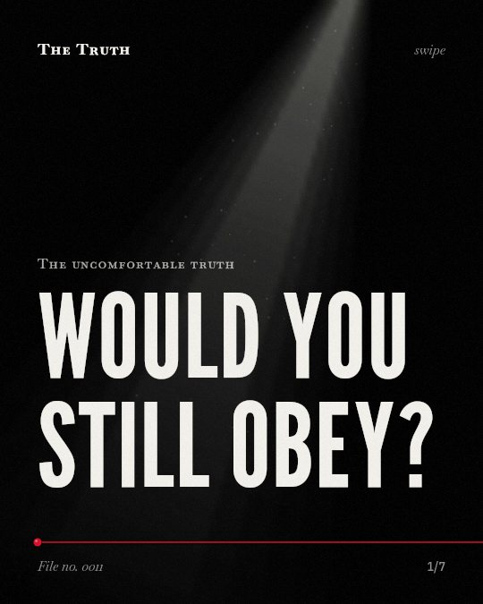

The uncomfortable truth
Would you still obey?

Obedience rates remain high in modern studies.
Participants in 2006 and 2017 replications showed levels of obedience similarly high to the original studies.,
Supported. At least one solid peer-reviewed study. The evidence backs this.
What the research found
Participants who saw a confederate refuse the experimenter's instructions obeyed as often as those who saw no model.
“Contrary to expectation, participants who saw a confederate refuse the experimenter's instructions obeyed as often as those who saw no model.”
Experiment, 2009. Burger, The American psychologist.
High identifiers of the science of the study are more hesitant to press the shock button than low identifiers.
“we also manipulate the extent to which participants identify with the science of the study and show that high identifiers both give more help, are less stressed, and are more hesitant to press the shock button than low identifiers.”
Experiment, 2018. Gonzalez-Franco et al., PloS one.
Participants who saw and heard a virtual human tended to respond to the situation at the subjective, behavioural and physiological levels as if it were real.
“the participants who saw and heard her tended to respond to the situation at the subjective, behavioural and physiological levels as if it were real.”
Experiment, 2006. Slater et al., PLoS ONE.
Obedience rates in a 2006 replication were only slightly lower than those Milgram found 45 years earlier.
“Obedience rates in the 2006 replication were only slightly lower than those Milgram found 45 years earlier.”
Experiment, 2009. Burger, The American psychologist.
The results achieved show a level of participants’ obedience toward instructions similarly high to that of the original Milgram studies.
“The results achieved show a level of participants’ obedience toward instructions similarly high to that of the original Milgram studies.”
Experiment, 2017. Doliński et al., Social Psychological and Personality Science.
Models of defiance do not stop you.
Even when participants saw a confederate refuse instructions, they obeyed as often as those who saw no model at all.
Your identification with science matters.
Those who identify less with the science of a study are more hesitant to press the button. That may be why your personal connection to a cause dictates your actions.
This part is our reading of the evidence, not a finding.
The office manual.
You sit at your desk. You read a policy. You follow a step that feels wrong but is required by the company. You click the button.
The honest summary
The evidence confirms that high levels of obedience persist in modern replications, even when participants are aware the shocks are not real or when models of defiance are present.
Many modern studies are partial replications or use virtual reality because ethical considerations prevent full replications of the original experiments.
Who are you following today?
Sources
- Burger JM (2009). Replicating Milgram: Would people still obey today?. The American psychologist. Experiment, cited 641 times.
- Gonzalez-Franco M, Slater M, Birney ME, Swapp D, Haslam SA, Reicher SD (2018). Participant concerns for the Learner in a Virtual Reality replication of the Milgram obedience study. PloS one. Experiment, cited 49 times.
- Dariusz Doliński, Tomasz Grzyb, Michał Folwarczny et al. (2017). Would You Deliver an Electric Shock in 2015? Obedience in the Experimental Paradigm Developed by Stanley Milgram in the 50 Years Following the Original Studies. Social Psychological and Personality Science. Experiment, cited 119 times.
- Slater M, Antley A, Davison A, Swapp D, Guger C, Barker C, Pistrang N, Sanchez-Vives MV (2006). A Virtual Reprise of the Stanley Milgram Obedience Experiments. PLoS ONE. Experiment, cited 636 times.
Also read for this file, not quoted
This file was researched and drafted by software, then checked by rules a model cannot talk its way around: each quote above was matched word for word against the paper, and every number had to appear in it. How files are made.